Изпит 1
📝 Следващ изпит
Не е зададен
Добавете предмет и дата
Влез с личния си профил.
Жестът на благодарност към @cryptohris е доброволен, не е плащане за услуга и не дава предимства.
Версия 58 · обновено 16.11.2026 · Безплатно нестопанско приложение
1 смяна • Таймери, програма & звънец
Текущ час / междучасие
Контролно по Математика
Коледна ваканция
Не е зададен
Добавете предмет и дата
Не е зададен
Добавете предмет и дата
Не е зададен
Добавете предмет и дата
Не е зададен
Добавете предмет и дата
Тук се показват всички синхронизирани изпити за текущата учебна година (от Shkolo и добавени ръчно). 5-те часовника по-горе отброяват само първите 5 най-близки предстоящи изпита.
| № | Вид | Предмет / Описание | Начало | Край | Време | Статус |
|---|
Ръчно добавените аларми и събития се виждат от всички профили в твоя клас (без домашните и изпитите, които имат свои отделни секции). Забележките остават лични. Не въвеждай лична информация, която не трябва да виждат съучениците ти.
Забележките от Shkolo се показват само в твоя профил. Те не се смесват с домашните и похвалите.
Похвалите от Shkolo се показват само в твоя профил. Те не се смесват с домашните и забележките.
Свържи своя Shkolo профил веднъж. Новите домашни и предстоящи изпити ще се появяват автоматично за целия клас, а забележките и похвалите — само в твоя профил. Всеки профил може да се свърже само със своя Shkolo акаунт и не вижда данни за друг клас.
Ще получиш еднократен код за връзка. Кодът е личен — пази го като парола.
Кодът за връзка се показва само веднъж. Ако го загубиш, генерирай нов и го постави отново в разширението.
chrome://extensions, включи „Developer mode“ и натисни „Load unpacked“.shkolo-bridge.Разширението използва само твоята вече отворена Shkolo сесия. Паролата ти за Shkolo не се изпраща към този сървър. По подразбиране синхронизираните домашни, учебна програма и изпити се пазят само за твоя профил (можеш да включиш споделянето с класа от разширението), а забележките и похвалите — винаги само за твоя профил. Нужна е версия 1.5.13 или по-нова.
Въведете предмета и точната дата и час на контролното, за да може таймерът да отброява времето до него.
Избери ден, после промени началото, дължините на часовете и междучасията, броя часове и предметите само за този ден. Събота и неделя са почивни и нямат учебни звънци.
Промени текстовете, формата и размера на часовника.
Паролата е лична. Ако я смените, използвайте новата парола при следващия вход.
Внимание: Това действие ще изтрие вашия профил и всички ваши лични данни (забележки, похвали) завинаги.
Можете да пуснете снимка тук или да поставите директно с Ctrl+V.
Разгледайте как работи приложението: от първоначалния вход и самостоятелните функции без Shkolo до опционалното свързване с електронния дневник и автоматичното извличане на учебната програма, контролните и домашните. Кликнете върху всяка снимка за преглед в пълен размер.
Училищният звънец, седмичната учебна програма, таймерите за изпити, официалните неучебни дни, класните аларми и домашните работи със снимки и OCR могат да се въвеждат и управляват изцяло ръчно и се споделят с целия клас в общата класна стая. От Shkolo се извлича лична информация ЕДИНСТВЕНО за забележки и похвали, които остават строго поверителни само за вашия личен профил.
Начален екран за вход в „Училищен Будилник“. Всеки ученик или родител въвежда своето потребителско име и парола. Защитата на профила използва сигурно scrypt криптографско хеширане. Ако все още нямате профил, изберете бутона „Нямаш профил? Регистрация“.
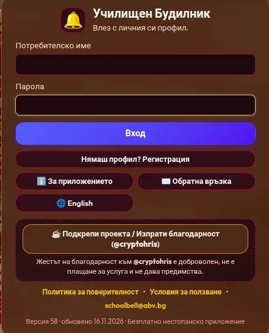
🔍 УвеличиПри регистрация избирате населено място, училище (от вградения списък с училища или чрез ръчно въвеждане) и съответната паралелка (например 9д клас). Всяка паралелка образува изолирана класна стая, в която съучениците споделят обща учебна програма, график на звънците, домашни и контролни.
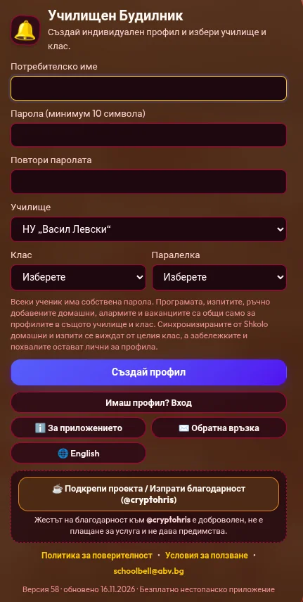
🔍 УвеличиВъвеждат се индивидуално потребителско име и надеждна парола (с минимална дължина от 10 символа). Всеки ученик има своя собствена парола. След потвърждаване профилът се създава мигновено и системата ви вписва в класната стая.
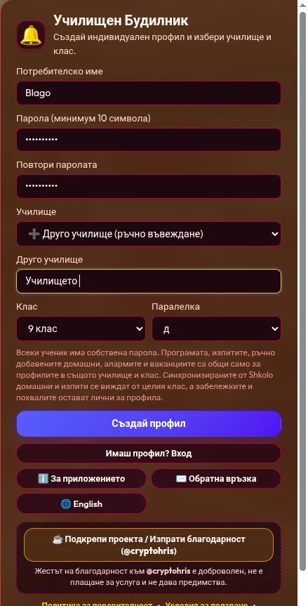
🔍 УвеличиГлавният екран показва голям училищен часовник с точно астрономическо време, текущата учебна смяна (например 1 Смяна 08:00 – 13:50), статус „В момента тече учебен час / междучасие“ и брояч „До края на часа“. Чрез бутоните горе можете да избирате аудио звънци, мелодии и цветни фонове.
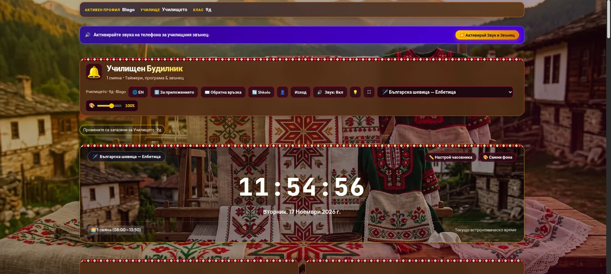
🔍 УвеличиТаймери за обратно броене в реално време: показват точно колко минути и секунди остават до училищния звънец, брояч на оставащите дни до най-близката официална ваканция (напр. Коледна, Пролетна) и бърза настройка за дата и предмет на предстоящ изпит.
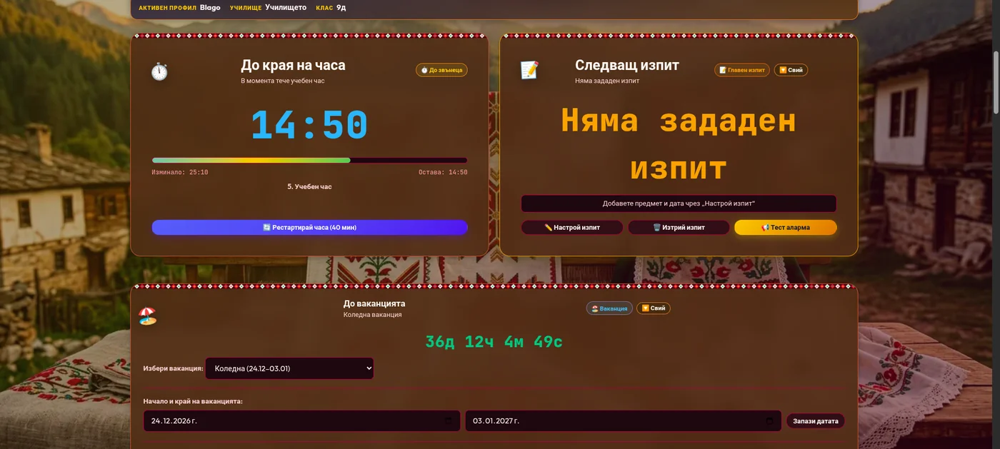
🔍 УвеличиСписък с официалните неучебни дни и празници за учебната година – държавни зрелостни изпити, национално външно оценяване (НВО), неучебни дни и ваканции. Позволява на класа да въвежда и следи важните дати, за да знаят всички ученици кога училището почива.
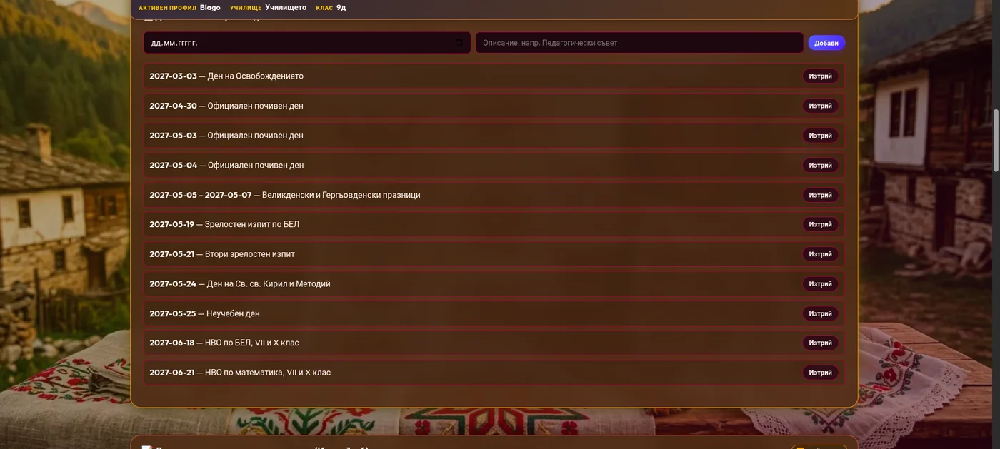
🔍 УвеличиСекция за проследяване на контролни и класни работи с индивидуални таймери и аларми за следващите 4 предстоящи изпита. Всеки ученик може да добави ръчно дата, час и предмет на контролното, което веднага става видимо за целия клас, а под тях е достъпен пълен списък на всички насрочени изпити за учебната година.
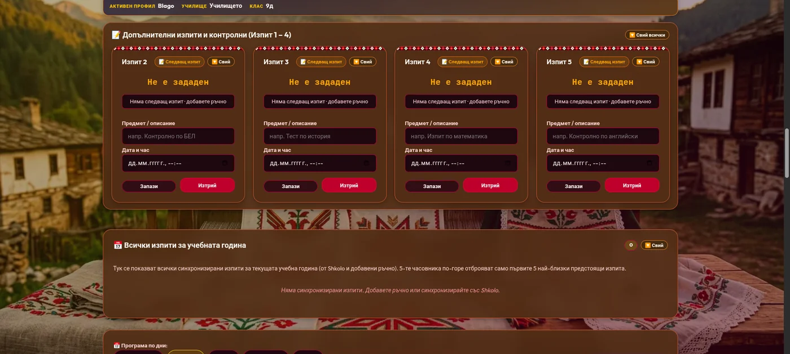
🔍 УвеличиПълна седмична учебна програма по дни (от понеделник до петък) с часове, продължителност и междучасия (малко и голямо). Включва вграден редактор на програмата, с който всяка паралелка може лесно да въведе и настрои часовете на звънеца за деня.
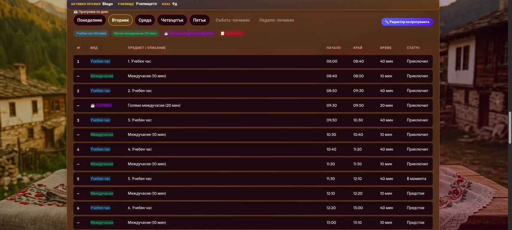
🔍 УвеличиСподелени класни аларми и напомняния за общи събития – родителски срещи, класни събрания, спортни събития или екскурзии. Всички въведени тук събития са общи и се виждат в реално време от всички съученици в паралелката.
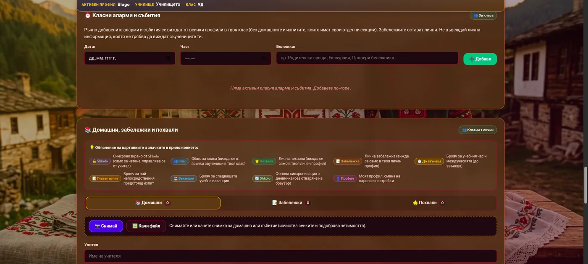
🔍 УвеличиУдобна форма за ръчно добавяне на домашни работи за класа – попълват се предмет, учител, краен срок и подробни указания (до 5000 знака). Включва бутон за прикачване на снимка от учебник или тетрадка с автоматично изчистване на сенките и подобряване на четимостта чрез вграден локален OCR. Всички добавени тук домашни се виждат веднага от целия клас.
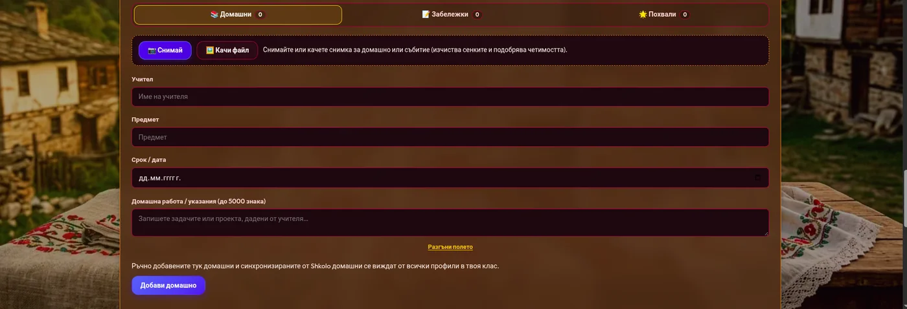
🔍 УвеличиАко използвате електронния дневник Shkolo, разширението за браузър „Училищен Будилник Bridge“ може автоматично да попълва седмичната програма, контролните и домашните работи. От Shkolo се извлича лична информация ЕДИНСТВЕНО за забележки и похвали (които остават строго поверителни само във вашия личен профил и никога не се показват на другите). Всичко останало може да се въвежда и ръчно!
В картата „Домашни, изпити, забележки и похвали от Shkolo“ в уеб приложението натиснете бутона „Свържи Shkolo“. Генерира се личен еднократен код за връзка (токен) и се предоставя директен линк за сваляне на разширението за браузър. Ясно се посочва, че новите домашни и изпити могат да се споделят с класа, докато личните забележки и похвали остават видими единствено за вашия профил.
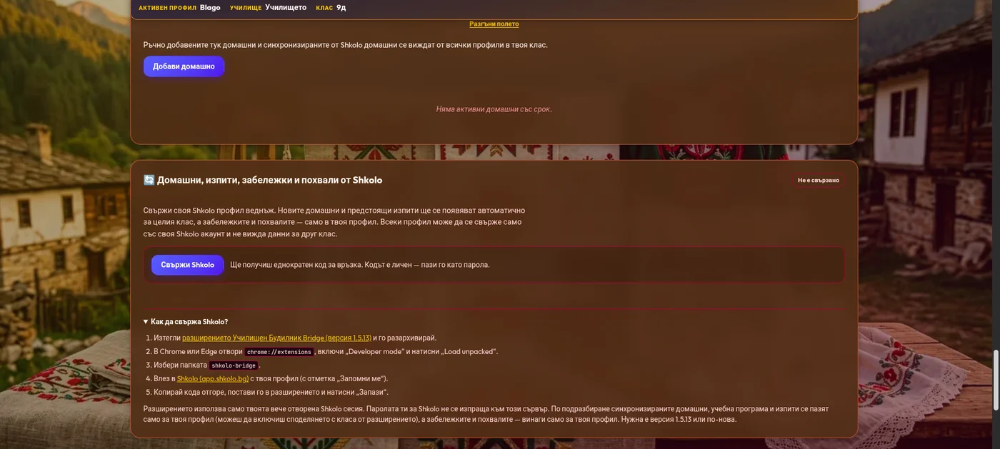
🔍 УвеличиИзтеглете архива shkolo-bridge.zip от бутона в картата за Shkolo. Инсталирането под Windows, Chrome или Edge се прави в 4 бързи стъпки:
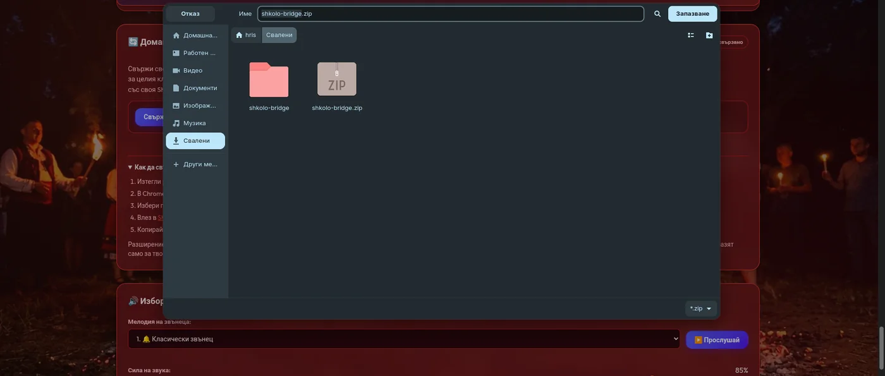
🔍 УвеличиПри първо кликване върху иконата на разширението се отваря екран за информирано съгласие. Докато потребителят не натисне изрично „Съгласен съм и продължавам“, разширението не прави никакви мрежови заявки, не записва в хранилището и не чете страници от дневника.
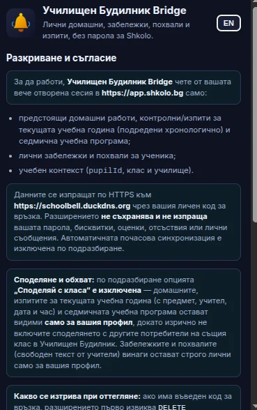
🔍 УвеличиПодробно разяснение: пароли за Shkolo не се четат и не се предават, оценки, отсъствия, медицински бележки и лични чатове не се събират. Бутонът „Отказвам“ оставя разширението заключено. Бутонът „Съгласен съм и продължавам“ отключва полето за код за връзка.
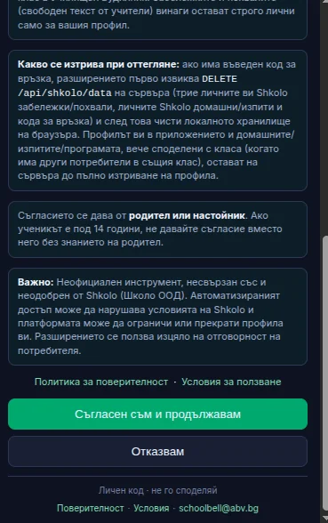
🔍 УвеличиПоставете генерирания код от уеб приложението и натиснете „Запази“. Разширението се свързва към https://schoolbell.duckdns.org през защитена HTTPS връзка, използвайки вашата вече отворена сесия в app.shkolo.bg. По подразбиране данните остават само за вашия профил, освен ако изрично не включите отметката „Споделяй с класа“.
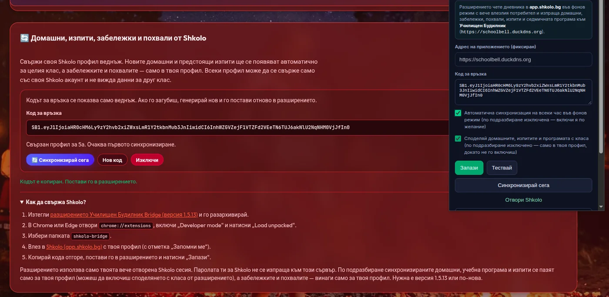
🔍 УвеличиМаксимално удобство: новите контролни, домашни и седмична програма от Shkolo спестяват време на целия клас. Личната информация (забележки и похвали от учителите) остава видима САМО във вашия личен профил.
След синхронизация насрочените контролни и класни работи от дневника се появяват автоматично с предмет, дата и точен начален час. Таймерът на главния часовник започва незабавно да отброява времето до контролното.
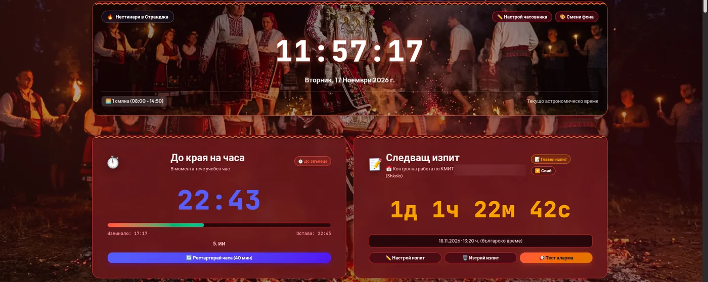
🔍 УвеличиПриложението извежда 5 отделни часовника с обратно броене за първите 5 най-близки предстоящи изпита за класа. Под тях е наличен пълен списък с всички контролни работи за учебната година, подредени хронологично.
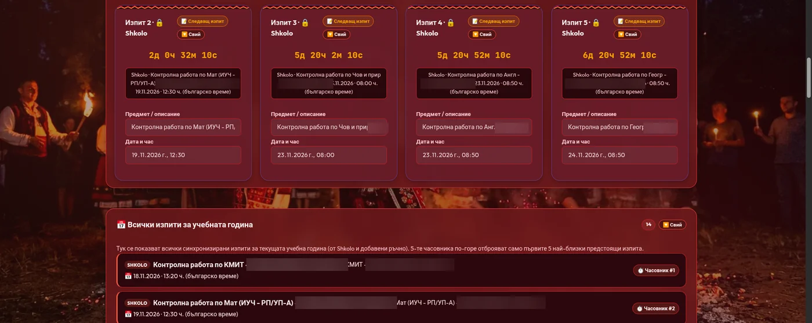
🔍 УвеличиСедмичната учебна програма от дневника автоматично попълва предметите по часове (БЕЛ, Математика, География, ИИ и др.), заедно с часовете и междучасията. Системата автоматично отбелязва кой час е приключил и кой тече в момента.
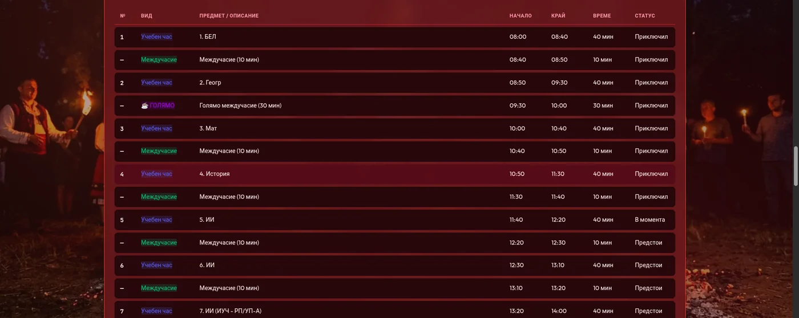
🔍 УвеличиПоказва класните аларми и събития заедно с пълна визуална легенда за значките: кои записи са синхронизирани от Shkolo, кои са общи за класа и кои са лични забележки и похвали (видими само за вас).
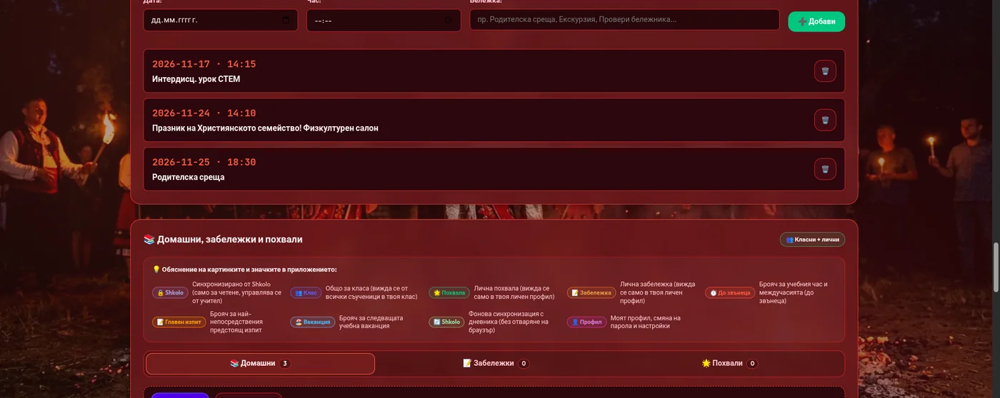
🔍 УвеличиАктуалните домашни работи, въведени от учителите в дневника, се визуализират в таб „Домашни“ с предмет, срок за предаване и точни указания. Изтеклите домашни се архивират и изчистват автоматично.
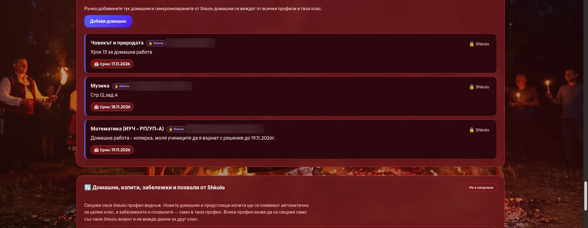
🔍 УвеличиИзгледайте кратката видео демонстрация на всички основни функции на „Училищен Будилник“: от създаването на профил за училище и клас до автоматичното синхронизиране с Shkolo.
Избират се училище (напр. ПТГ), клас (9) и паралелка (г). Всички ученици от една и съща паралелка споделят обща стая за програмата, без да се смесват с други класове.
Показва се големият цифров училищен часовник с отброяване в реално време на текущия час (40 мин.), малките и големите междучасия и бутонът за рестартиране на часа.
Табло за обратно броене до следващата ваканция (напр. Междусрочна), пълен календар на официалните неучебни дни в България и възможност за добавяне на извънредни почивни дни за класа.
Седмичното разписание по часове (1–7 час) с автоматичен индикатор за текущия час и аларми с обратно броене за следващите контролни и изпити.
Генериране на еднократен токен за връзка в уеб приложението, зареждане на разширението „Училищен Будилник Bridge“ в браузъра и защитено синхронизиране на програмата и домашните.
Всички функции на „Училищен Будилник“ работят напълно самостоятелно и БЕЗ Shkolo! Седмичната учебна програма, звънците за часовете, контролните и изпитите, официалните неучебни дни, класните аларми и домашните работи могат да се попълват изцяло ръчно и се споделят с целия клас в общата класна стая.
Връзката със Shkolo е изцяло по желание (опционална): от дневника се извлича лична информация ЕДИНСТВЕНО за забележки и похвали (които остават строго поверителни само във вашия личен профил и не се споделят с класа).
Проектът е некомерсиален, без реклами и без платени функции. Всяко училище и паралелка имат своя изолирана стая за общо разписание, а информацията за проекта е достъпна веднага без регистрация.
Показва текущия час или междучасие и отброява на живо оставащото време до следващия звънец. Звукът на звънеца може да се пуска или заглушава с бутона за аудио.
Интерактивна програма по дни (понеделник – петък) с вграден Редактор на програмата и табло с точно обратно броене до 5-те най-близки предстоящи контролни, тестове и ваканции.
Следене на предстоящите домашни работи (общи за паралелката), както и лични похвали и забележки от учителите (видими единствено в индивидуалния профил).
Възможност за прикачване на снимки към домашни и напомняния. Снимките се съхраняват в изолирана папка с права 0600 на сървъра, а текстът се разчита напълно локално с tesseract без изпращане на трети страни.
Към приложението има безплатно браузърно разширение „Училищен Будилник Bridge“ (v1.5.13) (за Chrome, Edge и Brave), което синхронизира във фонов режим:
Ако приложението ви е полезно, можете да изпратите доброволен жест на благодарност в Revolut към @cryptohris:
☕ Изпрати благодарност (@cryptohris)
Жестът на благодарност е изцяло доброволен, не е плащане за услуга, не подлежи на връщане и не дава никакви предимства или специални функции.
За въпроси, предложения, съобняване за грешки или упражняване на права по GDPR:
Изпратете съобщение директно през формата по-долу или ни пишете на schoolbell@abv.bg, ако желаете отговор по имейл.